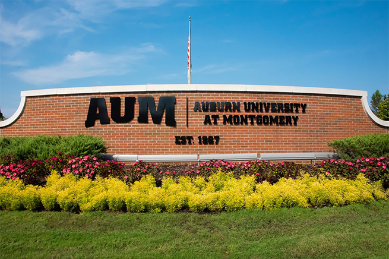

Welcome to Auburn University at Montgomery Department of Computer Science

Here at Auburn University at Montgomery, we offer the best to our students with the help of our amazing professors. A degree from Auburn University at Montgomery in Computer Science and Computer Information Systems is an investment to you and your future. With a degree, you will stand-out and get noticed, have an opportunity to build knowledge in areas of interest, and build your network. The program is designed to provide a solid foundation necessary for graduates to succeed in the computer industry and in graduate studies.
In addition to obtaining general computer science training, you will learn multi-core architectures and programming. High Performance Computing is the main theme of this degree program.The Department of Computer Science is a place that brings motivated students, professors, and professionals together. We train high-quality students to become problem solvers. Our majors are active and engaged in campus life. Students clubs such as Computer Science Club and Engineering Club are among the most active on campus. This allows us to provide exceptional future prospects to all those who study with us or collaborate with us. AUM welcomes you home with the chance to begin your first step at achieving your degree. Please be sure to check out our website, as we present to you some information on what we have to offer!